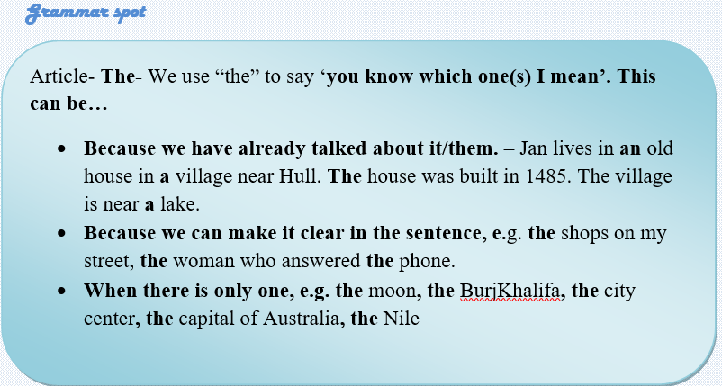
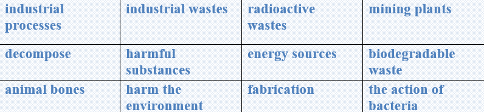

What is crude oil and what are petroleum products?
We call crude oil and petroleum fossil fuels because they are mixtures of hydrocarbons that formed from the remains of animals and plants (diatoms) that lived millions of years ago in oceans, lakes, and swamps before dinosaurs roamed the earth. Over millions of years, the remains of these animals and plants were covered by layers of sand, silt, and rock.
Heat and pressure from these layers turned the remains into what we now call crude oil or petroleum. Petroleum means rock oil or oil from the earth. Crude oil is found in large underground deposits, in tiny spaces within sedimentary rocks, and near the surface in tar (or oil) sands. Petroleum products are made from crude oil and other hydrocarbons contained in natural gas. Petroleum products can also be made from coal, natural gas, and biomass.
How does oil affect the environment?
Although petroleum products make life easier, finding, producing, and moving crude oil may have negative effects on the environment. Advances in oil exploration, production, and transportation technologies and enforcement of safety and environmental laws and regulations help to avoid and reduce these effects.
Task1 Reading
Fill the gaps with the given phrases in the box.

🔸Over millions of years, the remains and plants were covered by…
🔸… from these layers turned the remains into crude oil or petroleum.
🔸Petroleum means… or oil from the earth.
🔸Petroleum products are made from ….
🔸Petroleum products can also be made from …
🔸Crude oil is found in…
Task2 Reading
Find the given statements are true or false.
🔸Crude oil and petroleum fossil fuels are mixtures of hydrocarbons.
🔸Petroleum products can only be made from biomass.
🔸Hydrocarbons are formed from the remains of animal and plants.
🔸Petroleum means natural gas which comes the earth.
🔸Another word for the remains of plants is diatoms.
🔸Petroleum products make life more difficult.
🔸Finding, producing, and moving crude oil may have positive effects
🔸the environment.
🔸Environmental laws and regulations help to avoid and reduce negative effects.
Task3 Vocabulary
Find the endings of the words taken from the text above.
🔸Mixtu……….
🔸Rema……….
🔸Sedimen…….
🔸Explora…….
🔸Transport……
🔸Enforce…….
🔸Produc………
🔸Regula………
🔸Petrol……….
🔸Advan……….
Task4 Listening
Listen to a conversation between Jamil andStephanie. Choose the correct answer from thewords in italics.
1 Stephanie’s from Spain / France.
2 Jamil’s parents are from Egypt / the UAE.
3 Stephanie’s cousins live in Berlin / Paris.
4 Farooq’s from the UAE / Turkey.
5 Stephanie’s friends are from Spain / France.
Task5 Writing
✔️ Learn the given lexical units.
✔️ Work in groups and explain the meanings of the given lexical units.
✔️ Try to use them in sentences.

Read the case and give possible solutions
At present day, there are millions of factories, mills, industries and miningplants all over the world. During fabrication or industrial processes, it is inevitable that some materials are produced. Some industrial wastes are generated in a large amount over the year globally. Some examples of industrial wastes are sandpaper, ash, radioactive wastes, paints, metals, glass, oils, trash,solvents and etc.
There are two types of industrial waste materials:
🔹 Biodegradable
🔹 Non-biodegradable
Biodegradable waste is easily decomposed by the action of bacteria and can be turned into not harmful substances. Usually these materials do not harm the environment and some of them can be used as energy sources. Certain industries such as paper industry, food industry, sugar industry, and wool industry and etc., produce biodegradable waste. Some examples of biodegradable waste materials are paper, leather, wool, animal bones, wheat and etc.
Suggest some ways to manage biodegradable waste that comes from different industries.
What does “biodegradable” mean?
What is the problem with waste removal?
How serious is this situation?
What is the cause of this problem?
How it is successfully solved?
What is the most optimal solution?
Can present some tips on improving the situation?
Ortga